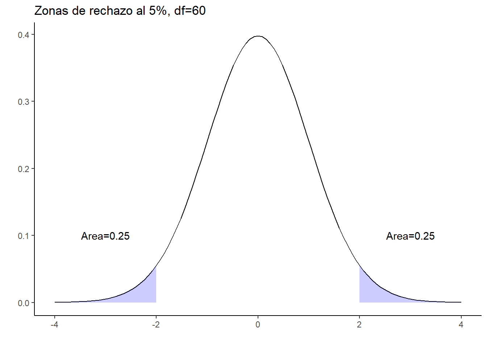

Capítulo2 Estimador MCO: Propiedades
Nuestro punto de partida es el modelo poblacional
\[\begin{equation} \tag{1} y=\beta_1+\beta_2x_2+\beta_3x_3+...+\beta_kx_k+u \end{equation}\]
Donde donde las variables \(y,x_2,...,x_k\) son aleatorias y observables, y \(u\) es un error no observable. Los parámetros \(\beta_1,\beta_2,...,\beta_k\) son los que queremos estimar. El error \(u\) recoge perturbaciones aleatorias, y también todo aquello que es importante para explicar \(y\) pero que no hemos incluido explícitamente en el modelo, es decir variables omitidas.
La idea de población no hace referencia, necesariamente, a una población física en el mundo real. Significa que si tenemos una observación para el individuo i, \((y_i,x_i)\), esta la consideramos como la realización de una función de probabilidad conjunta \(F(y,x)\). Nosotros no conocemos \(F\), y el propósito de la inferencia es aprender sus características a partir de una muestra, es decir del conjunto particular de datos que tenemos.
Lo anterior significa que a partir de nuestros datos estimamos los valores de \(\boldsymbol{\beta}\), y a estos los llamamos \(\hat{\boldsymbol{\beta}}\) El estimador MCO consiste en estimar dichos parámetros a partir de encontrar el valor de ellos tales que se minimiza la diferencia al cuadrado entre el valor observado y el valor predicho, con una muestra particular de datos. Esto quiere decir que son aquellos que minimizan la expresión
\[\begin{equation} \tag{2} \sum_i^n(y_i-\hat{\beta_1}-\hat{\beta_2}x_{i2}-...-\hat{\beta_k}x_{ik})^2 \end{equation}\]
Donde \(i=1,...,n\) identifica cada observación en la muestra. Al tomar las condiciones del primer orden obtenemos
\[\begin{align} \tag{3} \sum_i^n(y_i-\hat{\beta_1}-\hat{\beta_2}x_{i2}-...-\hat{\beta_k}x_{ik})&=0\\ \sum_i^nx_{i2}(y_i-\hat{\beta_1}-\hat{\beta_2}x_{i2}-...-\hat{\beta_k}x_{ik})&=0\\ .&\\ .&\\ .&\\ \sum_i^nx_{ik}(y_i-\hat{\beta_1}-\hat{\beta_2}x_{i2}-...-\hat{\beta_k}x_{ik})&=0 \end{align}\]
Fíjese que tenemos un sistema de \(k\) ecuaciones con \(k\) incognitas. En términos matriciales esto lo podemos escribir como
\[\begin{equation} \tag{4} \mathbf{X'}(\mathbf{y}-\mathbf{X}\boldsymbol{\hat{\beta}})=0 \end{equation}\].
Donde \(\mathbf{X}\) es \(n\times k\) y recoje los datos de las variables independientes, mientras que \(\mathbf{y}\) es \(n\times 1\) y contiene los valores de la variable dependiente, y es la matriz de parámetros estimados, de dimensión \(k\times 1\).
La expresión anterior es equivalente a
\[\begin{equation} \tag{5} \mathbf{(X'X)}\hat{\boldsymbol{\beta}}=\mathbf{X'y} \end{equation}\]
Si la matriz \(\mathbf{(X'X)}\) es invertible entonces podemos premultiplicar a ambos lados por \(\mathbf{(X'X)}^{-1}\) y obtenemos
\[\begin{equation} \tag{6} \hat{\boldsymbol{\beta}}=\mathbf{(X'X)}^{-1}\mathbf{X'y} \end{equation}\]
La matriz \(\mathbf{(X'X)}\) es invertible si no hay colinealidad perfecta entre las variables.
Como el valor estimado de los parámetros se obtuvo de una muestra particular de datos entonces debemos tener en cuenta que pudimos haber observado una muestra diferente, con la cual el valor puntual estimado habría sido diferente. Nuestro objetivo es obtener las propiedades estadísticas del estimador
2.1 El valor esperado del estimador MCO
- S1 Modelo poblacional
\[\begin{equation} y=\beta_1+\beta_2x_2+\beta_3x_3+...+\beta_kx_k+u \end{equation}\]
S2 Tenemos una muestra aleatoria de tamaño \(n\), \(\{(x_{i1},x_{i2},...,x_{ik}):i=1,2,...,n\}\), es decir que las observaciones son independientes e identicamente distribuidas. Por ejemplo, el ingreso y nivel educativo del individuo \(i\) es independiente del individuo \(j\).
S3 No hay colinealidad perfecta, y por lo tanto \(\mathbf{(X'X)}\) es invertible
S4 \(E(u|x_1,x_2,...,x_k)=0\) El valor esperado condicional del error es cero. Es decir que el error no está relacionado con las variables independientes.
Bajo estos supuestos, podemos mostrar que
\[\begin{equation} \tag{7} E(\hat{\boldsymbol{\beta}}|\mathbf{X})=0 \end{equation}\]
Veamos. Primero tomemos el valor esperado condicional en la ecuación \((6)\)
\[\begin{equation} \tag{8} E(\hat{\boldsymbol{\beta}}|\mathbf{X})=\mathbf{(X'X)}^{-1}E(\mathbf{X'y}|\mathbf{X}) \end{equation}\]
Como \(\mathbf{y}=\mathbf{X}\boldsymbol{\beta}+u\), entonces
\[\begin{equation} \tag{9} E(\hat{\boldsymbol{\beta}}|\mathbf{X})=\mathbf{(X'X)}^{-1}\mathbf{X'X}\boldsymbol{\beta}+\mathbf{(X'X)}^{-1}\mathbf{X'}E(u|\mathbf{X}) \end{equation}\]
Luego, si se cumple S4
\[\begin{equation} \tag{10} E(\hat{\boldsymbol{\beta}}|\mathbf{X})=\boldsymbol{\beta} \end{equation}\]
Es decir que el estimador es insesgado.
2.2 La varianza del estimador en datos de corte transversal
S5 Homocedasticidad, \(Var(u|\mathbf{X})=\sigma^2\). Es decir que la varianza condicional del error es la misma para todos los valores de las variables explicativas.
Con S5 entonces podemos mostrar que
\[\begin{equation} \tag{11} Var(\hat{\boldsymbol{\beta}}|\mathbf{X})=\sigma^2\mathbf{(X'X)}^{-1} \end{equation}\]
Para entenderlo mejor, la varianza para un \(\beta_j\) particular sería
\[\begin{equation} Var(\hat{\beta_j}|\mathbf{X})=\dfrac{\sigma^2}{\sum_{i=1}^n(x_{ij}-\bar{x}_j)^2(1-R_j^2)} \end{equation}\]
Donde \(R_j^2\) es el \(R\)-cuadrado de una regresión de \(x_j\) contra las demás independiente. Entre más correlacionada esté \(x_j\) con las demás variables, mayor será el \(R\)-cuadrado
La varianza depende de tres cosas
La varianza del error \(\sigma^2\). Esto es una característica de la población. Si se agregan más variables esta podría reducirse. Sin embargo, si el modelo ya incluye las variables relevantes, entonces ya no habría nada que agregar
La variabilidad muestral de \(x_j\): \(\sum_{i=1}^n(x_{ij}-\bar{x}_j)^2\) Entre mayor sea la variabilidad menor es la varianza. Al aumentar el tamaño de muestra la variabilidad se incrementa y disminuye la varianza del estimador
El grado de relación lineal entre las variables independientes: \(R_j^2\). Entre mayor sea la correlación la varianza es más grande. Una alta correlación siginifica que a pesar de tener muchos datos tengo poca información
2.3 Error estándar e inferencia
Como \(\sigma^2\) no es observable \(Var(\hat{\beta_j}|\mathbf{X})\) no es computable. Para ello debo tener un estimador insesgado de \(\sigma^2\), esto es un \(\hat{\sigma}^2\) tal que \(E(\hat{\sigma}^2)=\sigma^2\), y por lo tanto que tengamos un estimador insesgado de la varianza del estimador
Como \(\sigma^2=E(u^2)\), entonces un estimador es la media muestral, promedio, de los residuales
\[\begin{equation} \hat{\sigma}^2=\dfrac{\sum_{i=1}^n\hat{u}_i^2}{n-k} \end{equation}\]
Luego el error estándar es
\[\begin{equation} \tag{12} se(\hat{\beta})=\dfrac{\hat{\sigma}}{\sum_{i=1}^n(x_{ij}-\bar{x}_j)^2(1-R_j^2)} \end{equation}\]
Importante. La formula anterior es válida bajo el supuesto de homocedasticidad
El próximo paso es hacer inferencia estadística, es decir la realización de pruebas de hipótesis. Para ello necesitamos la distribución muestral de \(\hat{\beta_j}\). De la ecuación \((9)\) es claro que la distribución muestral, condicionada en las independientes, depende del error.
- S5 El error se distribuye normal con media cero y varianza \(\sigma^2\): \(u\sim N(0,\sigma^2)\)
Bajo los supuestos anteriores y S5, tenemos entonces que
\[\begin{equation} \tag{13} \hat{\beta}_j\sim N(\beta,Var(\hat{\beta})) \end{equation}\]
Luego
\[\begin{equation} \tag{14} \dfrac{\hat{\beta}_j-\beta_j}{sd(\hat{\beta}_j)}\sim N(0,1) \end{equation}\]
Para hacer pruebas de hipótesis sobre un solo parámetro usamos \((14)\) pero teniendo en cuenta que \(sd(\hat{\beta})\) no es observable, pero su estimación es el error estándar, de donde tenemos que
\[\begin{equation} \tag{15} \dfrac{\hat{\beta}_j-\beta_j}{se(\hat{\beta}_j)}\sim t_{n-k} \end{equation}\]
Ahora, para probar \(H_0:\beta_j=0\) usamos la estadística \(t\equiv(\hat{\beta_j}-\beta_{j,H_0})/se(\hat{\beta}_j)\). Esta me dice que tanto se desvia el valor estimado del valor bajo la hipótesis nula en relación a la desviación estándar. Por ejemplo, si \(t=1\) decimos que el valor estimado es mayor a cero en una desviación estándar del estimador. Dado que se obtiene un valor puntual de \(\hat{\beta_j}\), pero sabemos que pudimos haber obtenido un valor diferente con otra muestra, entonce debemos examinar la distribución de \(\hat{\beta}_j\) para saber que tan probable es que hubiésemos obtenido un valor estimado de cero. La prueba \(t\) me permite responder esa pregunta
Demostración
Vamos a simular unos datos \(Y=\alpha+\beta_{X1}X_1+\beta_{X2}X_2+u\). Empezaremos simulando un proceso con \(\alpha=5\), \(\beta_{X1}=0.5\), \(\beta_{X2}=3\). Tomamos inicialmente una muestra \(n\approx 100\), y estimamos los coeficientes vía MCO
- Simulamos los datos y tomamos una muestra
library(mvtnorm)
library(ggplot2)
N<-10000
coefs<-cbind("hat_beta_1" = numeric(1000), "hat_beta_2" = numeric(1000)) #Vector que guardará los coeficientes
set.seed(1) # permite reproducir los resultados
X <- rmvnorm(N, c(50, 100), sigma = cbind(c(10, 2.5), c(2.5, 10))) # generamos X1 y X2
u <- rnorm(N, sd = 5)
Y <- 5 + 0.5 * X[, 1] + 3 * X[, 2] + u
xdf<-data.frame(X,Y)
dfs<-sample(c(TRUE,FALSE),nrow(xdf),replace=TRUE,prob=c(0.01,0.99)) #muestra aleatoria, n aprox 100
dfs<-xdf[dfs,]- Estimamos por MCO
model1<-lm(Y~X1+X2,data=dfs)
model1
Call:
lm(formula = Y ~ X1 + X2, data = dfs)
Coefficients:
(Intercept) X1 X2
-12.4896 0.9628 2.9362 - Calculamos el error estándar y el estadístico \(t\). Tenga en cuenta que para estimar la varianza del estimador necesitamos \[\hat{\sigma}^2=\dfrac{\sum_{i}^{n}\hat{u}_i}{n-k}\]
X1bar<-mean(dfs$X1)
sumX1sqr<-sum((dfs$X1-X1bar)^2)
Rsqrx1<-summary(lm(X1~X2,data=dfs))$r.squared
uhat<-model1$residuals
sigmahat<-(sum(uhat^2))/(model1$df.residual)#Varianza estimada del error
varhatb1hat<-sigmahat/(sumX1sqr*(1-Rsqrx1))#Varianza estimada del estimador
se<-sqrt(varhatb1hat)
se[1] 0.1990679t<-coef(model1)[2]/se
t X1
4.836502 - Hacemos la prueba de hipótesis \(Ho:\beta_{X1}=0\) contra la alternativa \(Ha:\beta_{X1}\neq0\). Grafiquemos la distribución \(t_{df}\) con los grados de libertar correspondientes y veamos donde se ubica nuestro estadístico \(t\)
funcShaded <- function(x) {
y <- dt(x,df=87)
y[x > -2&x<2 ] <- NA
return(y)
}
tdst<- ggplot(data.frame(x = c(-4, 4)), aes(x = x)) +
stat_function(fun = dt, args = list(df = model1$df.residual))
tdst+theme_classic()+stat_function(fun=funcShaded,geom="area", fill="blue",alpha=0.2)+
annotate("text", x =-3 , y = 0.1,label="Area=0.25")+annotate("text", x =3 , y = 0.1,label="Area=0.25")+
labs(title="Zonas de rechazo al 5%, df=60",y="",x="")
2.4 Ejercicio
2.4.1 Retornos a la educación
Ingrese a la carpeta Data en el repositorio y descargue la base de datos wagew.rda. Esta base contiene los datos de la GEIH 2019. La base tiene información para personas ocupadas cuya posición ocupacional es empleado de empresa particular o empleado del gobierno. Contiene las siguientes variables
- p6020: 1 hombre, 2 mujer
- p6040: edad en años
- p6210: nivel educativo más alto alcanzado. 1 ninguno, 3 primaria, 4 básica (6-9), 5 media (10-13), 6 superior o universitaria
- p6210s1: último grado aprobado
- impa: ingreso monetario mensual
- sy: años de escolaridad
Su propósito es estimar el retorno a la educación, en otras palabras, en cuánto aumenta el ingreso por cada año adicional de educación. Para ello plantea una ecuación de Mincer de la forma
\[ ln(w_i)=\alpha+\beta_1S_i+\beta_2Exp_i+\beta_3Exp^2+\gamma Mujer_i+e_i \] Donde
- \(ln(w_i)\): logaritmo del ingreso laboral mensual
- \(S_i\): años de escolaridad
- \(Exp\): es la experiencia potencial en el mercado laboral, la cual se calcula como \(edad-S_i-6\)
- \(Mujer\): dummy que identifica a las mujeres
- Antes de realizar la estimación, lleve a cabo el siguiente análisis gráfico
Haga un gráfico de dispersión (scatter) donde tenga los años de escolaridad en el eje X y \(ln(w)\) en el eje Y (use ggplot con geom_point). Interprete
En una gráfica superponga la distribución empírica, densidad, de \(ln(w)\) para hombres y para \(mujeres\). Interprete los resultados
Realice la estimación del modelo y reporte los resultados en una tabla bien ordenada. Interprete los coeficientes en términos de dirección, magnitud y significancia2
¿El coeficiente estimado \(\hat{\beta_1}\) tiene interpretación causal? Explique.
2.4.2 Rendimiento en pruebas Saber 11
Es un hecho reconocido que los estudiantes de colegios oficiales tienen, en promedio, un rendimiento inferior al de los colegios privados en pruebas estandarizadas. Usando datos de la prueba SABER11 de 2020 para el departamento del Atlántico, se examinará esta cuestión. En particular, se pretende responder la pregunta ¿Cuánto es el impacto de asistir a un colegio oficial sobre el puntaje en las pruebas SABER 11? En otras palabras, cuánto del diferencial de desempeño se puede atribuir a la naturaleza del colegio.
Estime el siguiente modelo
\[ Puntaje_i=\alpha+\beta O_i+\mathbf{x}\boldsymbol{\gamma}+u_i \]
Donde la variable dependiente es punt_global y la variable explicativa de interés es una dummy que toma el valor de \(1\) si el colegio es oficial y 0 si es no oficial. En la base la variable para construir la dummy es cole_naturaleza. \(\mathbf{x}\) Corresponde a las variables de control.
Ingrese al repositorio y descargue la base saber11at.csv.
Elija el conjunto de variables de control que considere relevantes. No es cualquier variable, debe haber una razón para incluirla. La idea tampoco es incluir muchas variables. Elija 5 máximo
Estime el modelo sin incluir las variables de control. Interprete \(\hat{\beta}\) y analice si el estimador es insesgado. Explique detalladamente
Estime el modelo con las variables de control. Interprete \(\hat{\beta}\) y compárelo con lo obtenido en el punto anterior ¿Podría darle una interpretción causal? Explique